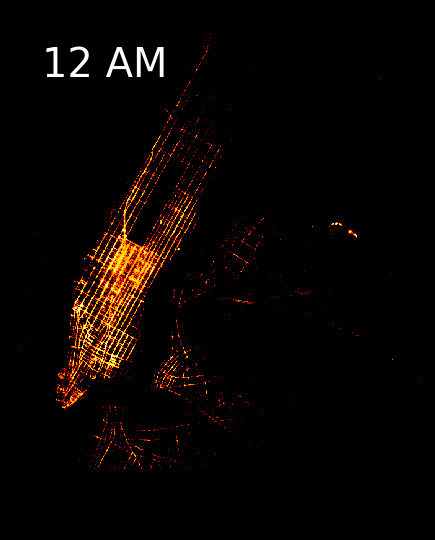
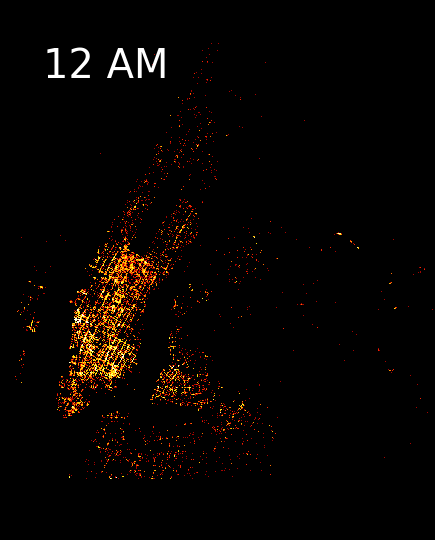

Overall Growth: Taxi vs Uber
While the demand trend for taxi rides remained mostly constant during this period, the demand for Uber rides increased steadily instead.
The demand for Uber exceeded the demand for taxi rides in July 2014.
Use the slider to look at the demand trends for taxi and Uber rides for each month.
Comparing Taxi and Uber Pick Up Counts and Hourly Averages
On average, the demand for both taxi and uber rides increases as the day progresses. This demand peaks during the morning rush hour and evening rush hour periods.
It is interesting to note that the demand for taxi rides lags behind the demand for Uber rides - it peaks an hour behind Uber’s demand peak, and troughs roughly three to four hours after Uber’s demand trough.
Use the interactive interval selection to look more closely at how the total number and proportion of taxi and uber pick-ups vary at different time intervals of the day.
Where do Pick Ups Most Frequently Occur and How Do They Relate To Traffic?
These GIF images show the taxi and Uber pickup locations respectively, at each hour of the day in New York City between April-September 2014. Each pickup point is represented by a point in the map and brighter areas are characteristics of greater pickup activity.
Taxi Uber
